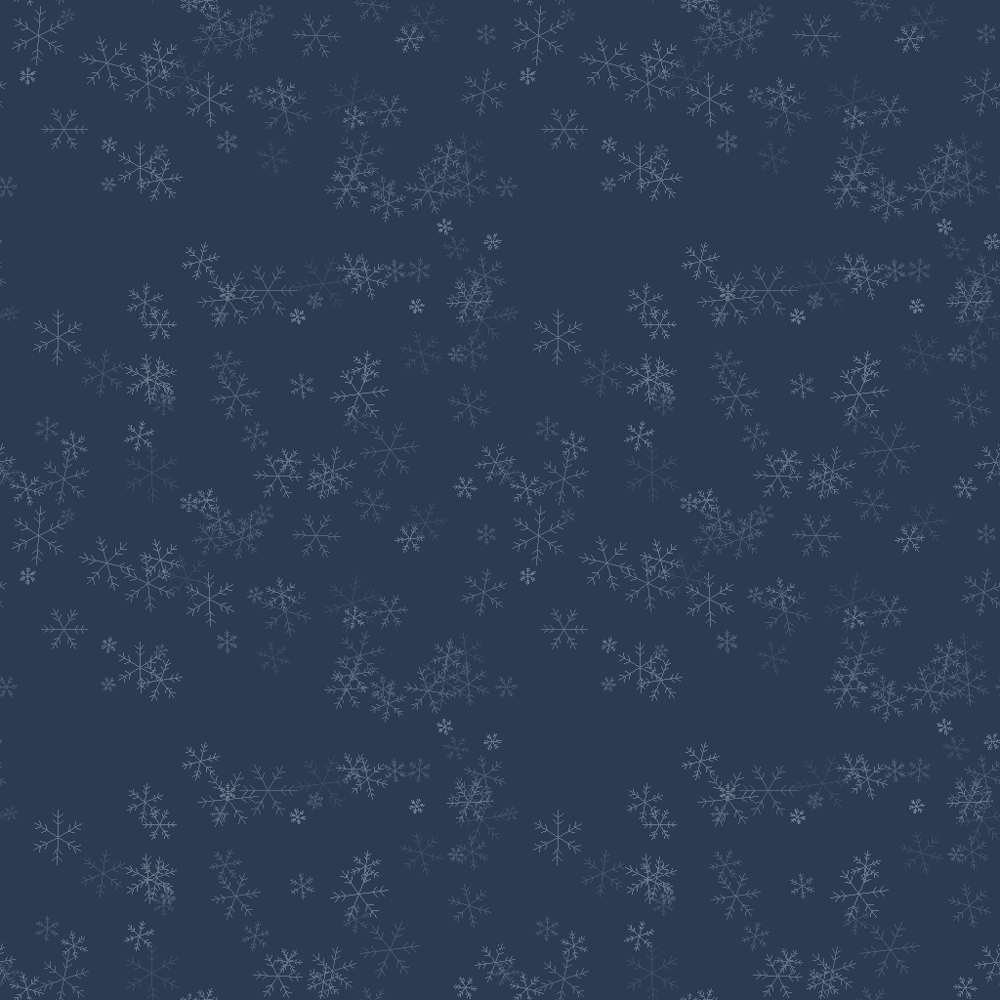
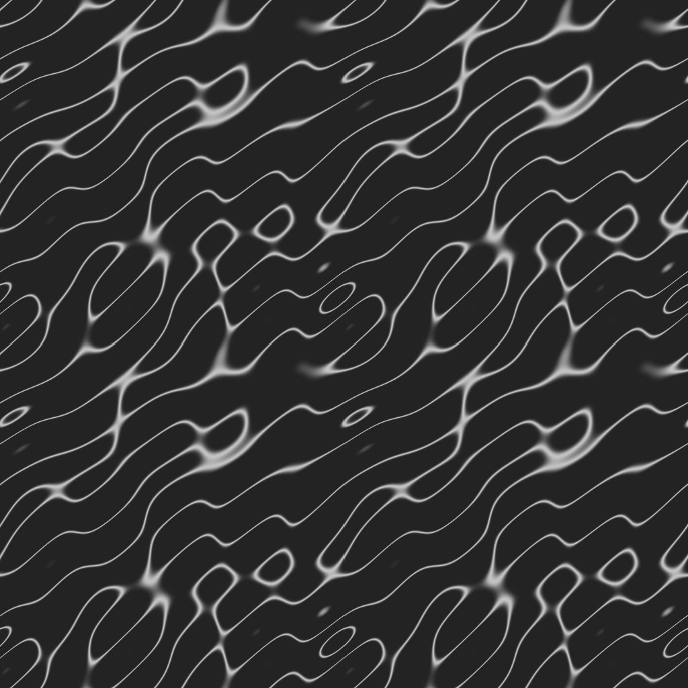

Светлый фон / snow Все материалы Новый логотип: версии, спрайт-шиты и демонстрация анимации
01 / Знак и носители
apple-touch-icon-180.pngbrand/apple-touch-icon-180.png
favicon-32.pngbrand/favicon-32.png favicon.icobrand/favicon.ico
icon-192.pngbrand/icon-192.png
icon-512.pngbrand/icon-512.png
icon-maskable-512.pngbrand/icon-maskable-512.png
logo-inverse.svgbrand/logo-inverse.svg
logo-lockup-inverse.svgbrand/logo-lockup-inverse.svg
logo-lockup-mono.svgbrand/logo-lockup-mono.svg logo-lockup-sprite-color.pngbrand/logo-lockup-sprite-color.png
logo-lockup-sprite-inverse.pngbrand/logo-lockup-sprite-inverse.png
logo-lockup-sprite-mono.pngbrand/logo-lockup-sprite-mono.png
logo-lockup.pngbrand/logo-lockup.png
logo-lockup.svgbrand/logo-lockup.svg
logo-mark-512.pngbrand/logo-mark-512.png logo-mark-sprite-color.pngbrand/logo-mark-sprite-color.png logo-mark-sprite-inverse.pngbrand/logo-mark-sprite-inverse.png
logo-mark-sprite-mono.pngbrand/logo-mark-sprite-mono.png
logo-mono.svgbrand/logo-mono.svg logo-presentation.pngbrand/logo-presentation.png
logo.svgbrand/logo.svg og-image.pngbrand/og-image.png 02 / Статусы, давность данных и состояние
frost-1.svgmarkers/frost-1.svg
frost-2.svgmarkers/frost-2.svg
frost-3.svgmarkers/frost-3.svg
me.svgmarkers/me.svg
selected-halo.svgmarkers/selected-halo.svg
state-dry.svgmarkers/state-dry.svg
state-flowing.svgmarkers/state-flowing.svg
state-frozen.svgmarkers/state-frozen.svg
state-unknown.svgmarkers/state-unknown.svg
state-weak.svgmarkers/state-weak.svg
status-exceed.svgmarkers/status-exceed.svg
status-not-sampled.svgmarkers/status-not-sampled.svg
status-ok.svgmarkers/status-ok.svg Наложения / иней поверх статуса, состояние в углу ok / frost-1 / dry exceed / frost-1 / unknown not-sampled / frost-1 / flowing ok / frost-2 / weak exceed / frost-2 / frozen not-sampled / frost-2 / dry ok / frost-3 / unknown exceed / frost-3 / flowing not-sampled / frost-3 / weak PNG @2x / для map.addImage
frost-1.pngmarkers/png@2x/frost-1.png
frost-2.pngmarkers/png@2x/frost-2.png
frost-3.pngmarkers/png@2x/frost-3.png
me.pngmarkers/png@2x/me.png
selected-halo.pngmarkers/png@2x/selected-halo.png
state-dry.pngmarkers/png@2x/state-dry.png
state-flowing.pngmarkers/png@2x/state-flowing.png
state-frozen.pngmarkers/png@2x/state-frozen.png
state-unknown.pngmarkers/png@2x/state-unknown.png
state-weak.pngmarkers/png@2x/state-weak.png
status-exceed.pngmarkers/png@2x/status-exceed.png
status-not-sampled.pngmarkers/png@2x/status-not-sampled.png status-ok.pngmarkers/png@2x/status-ok.png 03 / Снег, иней и блики caustics-tile-512.webpeffects/caustics-tile-512.webp frost-tile-512.webpeffects/frost-tile-512.webp
ice-crystal.svgeffects/ice-crystal.svg
snowflake-1.svgeffects/snowflake-1.svg
snowflake-2.svgeffects/snowflake-2.svg
snowflake-3.svgeffects/snowflake-3.svg
snowflake-4.svgeffects/snowflake-4.svg
snowflake-5.svgeffects/snowflake-5.svg 
frost / проверка стыков 2 × 2 
caustics / проверка стыков 2 × 2 topo / проверка стыков 2 × 2 04 / О воде
boil-water.svgpictograms/boil-water.svg
chemistry-only.svgpictograms/chemistry-only.svg
last-sample.svgpictograms/last-sample.svg
never-sampled.svgpictograms/never-sampled.svg
no-microbiology.svgpictograms/no-microbiology.svg 05 / Топографические горизонтали topo-contours.svgpatterns/topo-contours.svg 06 / Шапки карточек spring-brook.webpillustrations/card/spring-brook.webp spring-canopy.webpillustrations/card/spring-canopy.webp spring-forest-park.webpillustrations/card/spring-forest-park.webp spring-pipe-ravine.webpillustrations/card/spring-pipe-ravine.webp 07 / Зимний овраг hero-winter-ravine-mobile.webpillustrations/hero/hero-winter-ravine-mobile.webp hero-winter-ravine.webpillustrations/hero/hero-winter-ravine.webp 08 / Пустые состояния empty-filters.webpillustrations/empty/empty-filters.webp empty-offline.webpillustrations/empty/empty-offline.webp empty-reports.webpillustrations/empty/empty-reports.webp 09 / Гостевые аватары снегирьavatars/avatar-bullfinch.webp большая синицаavatars/avatar-great-tit.webp лазоревкаavatars/avatar-blue-tit.webp поползеньavatars/avatar-nuthatch.webp большой пёстрый дятелavatars/avatar-woodpecker.webp свиристельavatars/avatar-waxwing.webp сорокаavatars/avatar-magpie.webp галкаavatars/avatar-jackdaw.webp крякваavatars/avatar-mallard.webp гогольavatars/avatar-goldeneye.webp белкаavatars/avatar-squirrel.webp лисаavatars/avatar-fox.webp воробейavatars/avatar-sparrow.webp щеголavatars/avatar-goldfinch.webp клёстavatars/avatar-crossbill.webp заяц-белякavatars/avatar-hare.webp 10 / Синтетические фотообразцы Образец: Осенние листья в лотке родника.samples/photos/sample-autumn-leaves.webp Образец: Повреждённый бетонный лоток каптажа.samples/photos/sample-broken-tray.webp Образец: Вечерний родник под фонарём.samples/photos/sample-evening-lamp.webp Образец: Руки в перчатках набирают воду в бутыль.samples/photos/sample-filling-bottle.webp Образец: Трубка и выход воды покрыты наледью.samples/photos/sample-frozen-pipe.webp Образец: Обледенелая тропинка и ступени к роднику.samples/photos/sample-icy-path.webp Образец: Стенд у родника, надписи не читаются.samples/photos/sample-info-board.webp Образец: Пакеты и бутылки на снегу у родника.samples/photos/sample-litter.webp Образец: Трубка в заснеженном склоне, вода течёт.samples/photos/sample-pipe-flowing.webp Образец: Лёгкий пар над ручьём в мороз.samples/photos/sample-steam-brook.webp Образец: Летний вид небольшого родника.samples/photos/sample-summer-view.webp Образец: Деревянный навес над зимним родником.samples/photos/sample-wooden-canopy.webp Тёмный фон / dusk Все материалы Новый логотип: версии, спрайт-шиты и демонстрация анимации
01 / Знак и носители
apple-touch-icon-180.pngbrand/apple-touch-icon-180.png
favicon-32.pngbrand/favicon-32.png favicon.icobrand/favicon.ico
icon-192.pngbrand/icon-192.png
icon-512.pngbrand/icon-512.png
icon-maskable-512.pngbrand/icon-maskable-512.png
logo-inverse.svgbrand/logo-inverse.svg
logo-lockup-inverse.svgbrand/logo-lockup-inverse.svg
logo-lockup-mono.svgbrand/logo-lockup-mono.svg
logo-lockup-sprite-color.pngbrand/logo-lockup-sprite-color.png
logo-lockup-sprite-inverse.pngbrand/logo-lockup-sprite-inverse.png
logo-lockup-sprite-mono.pngbrand/logo-lockup-sprite-mono.png
logo-lockup.pngbrand/logo-lockup.png
logo-lockup.svgbrand/logo-lockup.svg
logo-mark-512.pngbrand/logo-mark-512.png
logo-mark-sprite-color.pngbrand/logo-mark-sprite-color.png
logo-mark-sprite-inverse.pngbrand/logo-mark-sprite-inverse.png
logo-mark-sprite-mono.pngbrand/logo-mark-sprite-mono.png
logo-mono.svgbrand/logo-mono.svg
logo-presentation.pngbrand/logo-presentation.png
logo.svgbrand/logo.svg
og-image.pngbrand/og-image.png 02 / Статусы, давность данных и состояние
frost-1.svgmarkers/frost-1.svg
frost-2.svgmarkers/frost-2.svg
frost-3.svgmarkers/frost-3.svg
me.svgmarkers/me.svg
selected-halo.svgmarkers/selected-halo.svg
state-dry.svgmarkers/state-dry.svg
state-flowing.svgmarkers/state-flowing.svg
state-frozen.svgmarkers/state-frozen.svg
state-unknown.svgmarkers/state-unknown.svg
state-weak.svgmarkers/state-weak.svg
status-exceed.svgmarkers/status-exceed.svg
status-not-sampled.svgmarkers/status-not-sampled.svg
status-ok.svgmarkers/status-ok.svg Наложения / иней поверх статуса, состояние в углу ok / frost-1 / dry exceed / frost-1 / unknown not-sampled / frost-1 / flowing ok / frost-2 / weak exceed / frost-2 / frozen not-sampled / frost-2 / dry ok / frost-3 / unknown exceed / frost-3 / flowing not-sampled / frost-3 / weak PNG @2x / для map.addImage
frost-1.pngmarkers/png@2x/frost-1.png
frost-2.pngmarkers/png@2x/frost-2.png
frost-3.pngmarkers/png@2x/frost-3.png
me.pngmarkers/png@2x/me.png
selected-halo.pngmarkers/png@2x/selected-halo.png
state-dry.pngmarkers/png@2x/state-dry.png
state-flowing.pngmarkers/png@2x/state-flowing.png
state-frozen.pngmarkers/png@2x/state-frozen.png
state-unknown.pngmarkers/png@2x/state-unknown.png
state-weak.pngmarkers/png@2x/state-weak.png
status-exceed.pngmarkers/png@2x/status-exceed.png
status-not-sampled.pngmarkers/png@2x/status-not-sampled.png
status-ok.pngmarkers/png@2x/status-ok.png 03 / Снег, иней и блики
caustics-tile-512.webpeffects/caustics-tile-512.webp
frost-tile-512.webpeffects/frost-tile-512.webp
ice-crystal.svgeffects/ice-crystal.svg
snowflake-1.svgeffects/snowflake-1.svg
snowflake-2.svgeffects/snowflake-2.svg
snowflake-3.svgeffects/snowflake-3.svg
snowflake-4.svgeffects/snowflake-4.svg
snowflake-5.svgeffects/snowflake-5.svg frost / проверка стыков 2 × 2 caustics / проверка стыков 2 × 2 topo / проверка стыков 2 × 2 04 / О воде
boil-water.svgpictograms/boil-water.svg
chemistry-only.svgpictograms/chemistry-only.svg
last-sample.svgpictograms/last-sample.svg
never-sampled.svgpictograms/never-sampled.svg
no-microbiology.svgpictograms/no-microbiology.svg 05 / Топографические горизонтали
topo-contours.svgpatterns/topo-contours.svg 06 / Шапки карточек
spring-brook.webpillustrations/card/spring-brook.webp
spring-canopy.webpillustrations/card/spring-canopy.webp
spring-forest-park.webpillustrations/card/spring-forest-park.webp
spring-pipe-ravine.webpillustrations/card/spring-pipe-ravine.webp 07 / Зимний овраг
hero-winter-ravine-mobile.webpillustrations/hero/hero-winter-ravine-mobile.webp
hero-winter-ravine.webpillustrations/hero/hero-winter-ravine.webp 08 / Пустые состояния
empty-filters.webpillustrations/empty/empty-filters.webp
empty-offline.webpillustrations/empty/empty-offline.webp
empty-reports.webpillustrations/empty/empty-reports.webp 09 / Гостевые аватары
снегирьavatars/avatar-bullfinch.webp
большая синицаavatars/avatar-great-tit.webp
лазоревкаavatars/avatar-blue-tit.webp
поползеньavatars/avatar-nuthatch.webp
большой пёстрый дятелavatars/avatar-woodpecker.webp
свиристельavatars/avatar-waxwing.webp
сорокаavatars/avatar-magpie.webp
галкаavatars/avatar-jackdaw.webp
крякваavatars/avatar-mallard.webp
гогольavatars/avatar-goldeneye.webp
белкаavatars/avatar-squirrel.webp
лисаavatars/avatar-fox.webp
воробейavatars/avatar-sparrow.webp
щеголavatars/avatar-goldfinch.webp
клёстavatars/avatar-crossbill.webp
заяц-белякavatars/avatar-hare.webp 10 / Синтетические фотообразцы
Образец: Осенние листья в лотке родника.samples/photos/sample-autumn-leaves.webp
Образец: Повреждённый бетонный лоток каптажа.samples/photos/sample-broken-tray.webp
Образец: Вечерний родник под фонарём.samples/photos/sample-evening-lamp.webp
Образец: Руки в перчатках набирают воду в бутыль.samples/photos/sample-filling-bottle.webp
Образец: Трубка и выход воды покрыты наледью.samples/photos/sample-frozen-pipe.webp
Образец: Обледенелая тропинка и ступени к роднику.samples/photos/sample-icy-path.webp
Образец: Стенд у родника, надписи не читаются.samples/photos/sample-info-board.webp
Образец: Пакеты и бутылки на снегу у родника.samples/photos/sample-litter.webp
Образец: Трубка в заснеженном склоне, вода течёт.samples/photos/sample-pipe-flowing.webp
Образец: Лёгкий пар над ручьём в мороз.samples/photos/sample-steam-brook.webp
Образец: Летний вид небольшого родника.samples/photos/sample-summer-view.webp
Образец: Деревянный навес над зимним родником.samples/photos/sample-wooden-canopy.webp Все фотообразцы синтетические и отмечены «ОБРАЗЕЦ». Они не подтверждают состояние реальных родников. Исходники, промпты и скрипты обработки находятся в assets-src/.